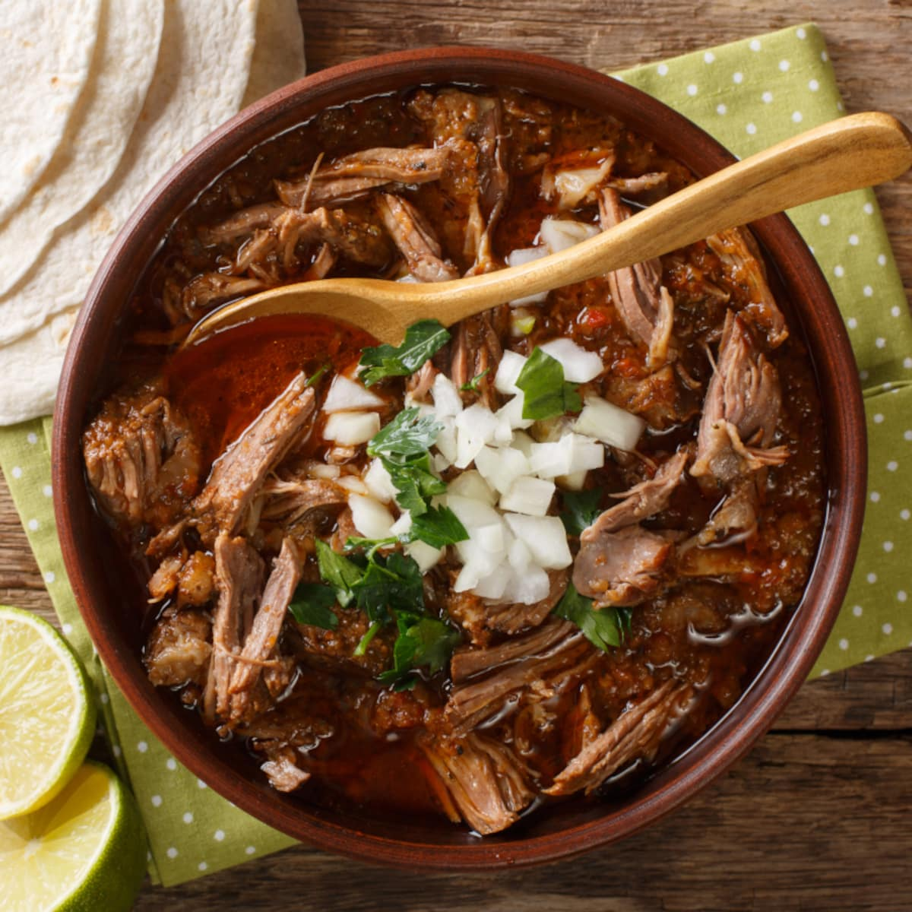

Birria

About this Birria
This is a non-traditional birria, simplified for a weeknight dinner.
Ingredients
- 1.5 lbs Beef Stew Meat
- 1 Onion, sliced
- 4 Cloves Garlic, crushed
- 1 TBSP Brown Sugar
- 1 TBSP Caldo con Sabor de Pollo
- Dash of red wine vinegar or lime juice
- 3 Dried Guajillo peppers
- 1 or 2 Jalapenos, coined
- 1 tsp Cumin
- Salt and Pepper to taste
Steps
- Combine all ingredients in a large pot or dutch oven with the lid closed
- Bake at 275 f for 3-4 hours, checking and stirring occasionally
- Remove the now hydrated guajillo peppers and blend them with some of the juice from the pot. Add back to the pot once smooth
- Shred the beef to your desired consistency
- Allow the beef to sit for at least 20 mins to absorb the broth